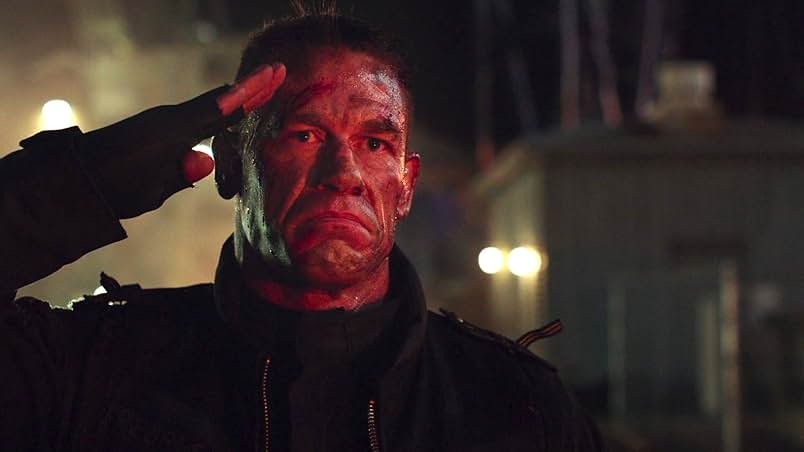
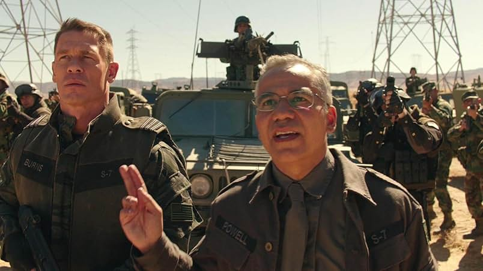
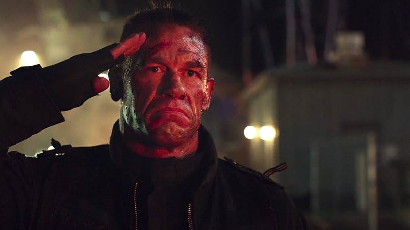
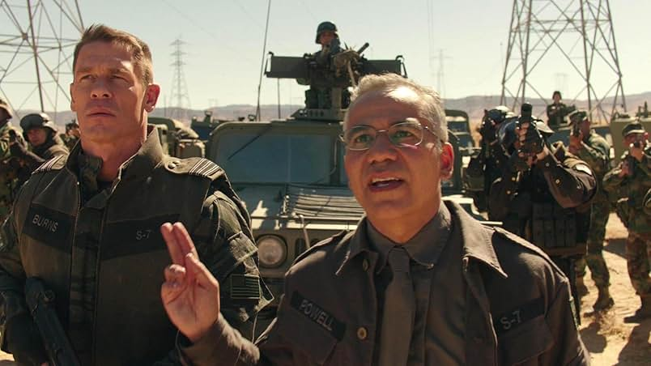
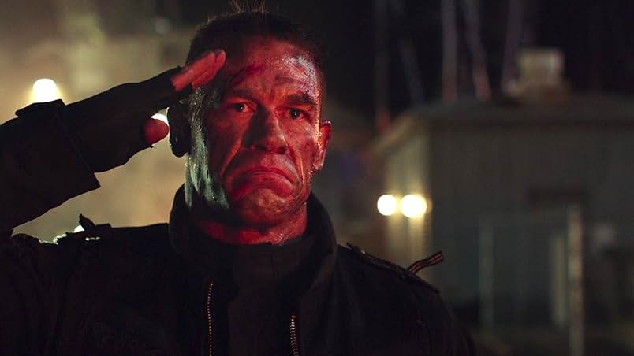
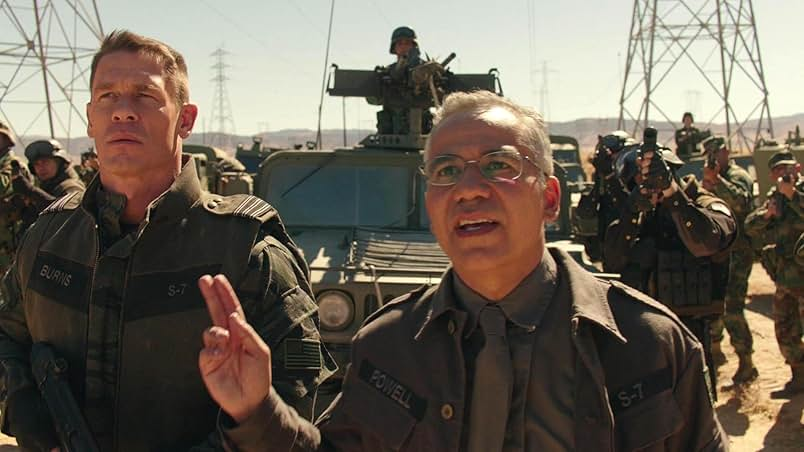

El Agente Jack Burns es uno de los antagonistas de la película. Pertenece al Sector 7, una organización gubernamental encargada de investigar y controlar presencia extraterrestre en la Tierra. Su desconfianza hacia los Transformers lo lleva a perseguir a Bumblebee durante buena parte del film, aunque luego comprende que no todos representan una amenaza. El personaje es interpretado por John Cena, nacido el 23 de abril de 1977 en Massachusetts, Estados Unidos. Cena comenzó su carrera como luchador profesional en la WWE para luego expandirse al cine. Cuando filmó Bumblebee, tenía 41 años. Entre sus trabajos más destacados en cine se encuentran Trainwreck, The Suicide Squad, Peacemaker (serie) y Fast & Furious 9.

